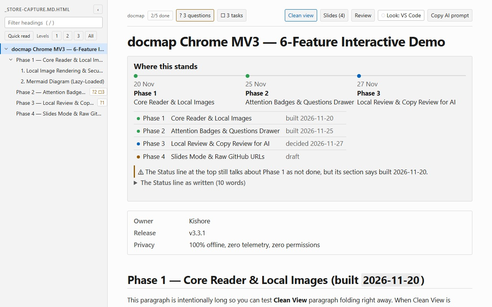
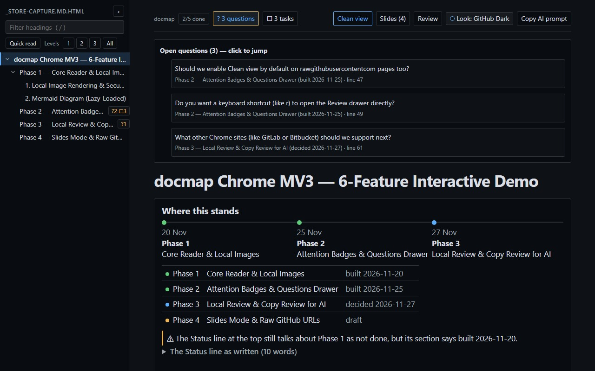
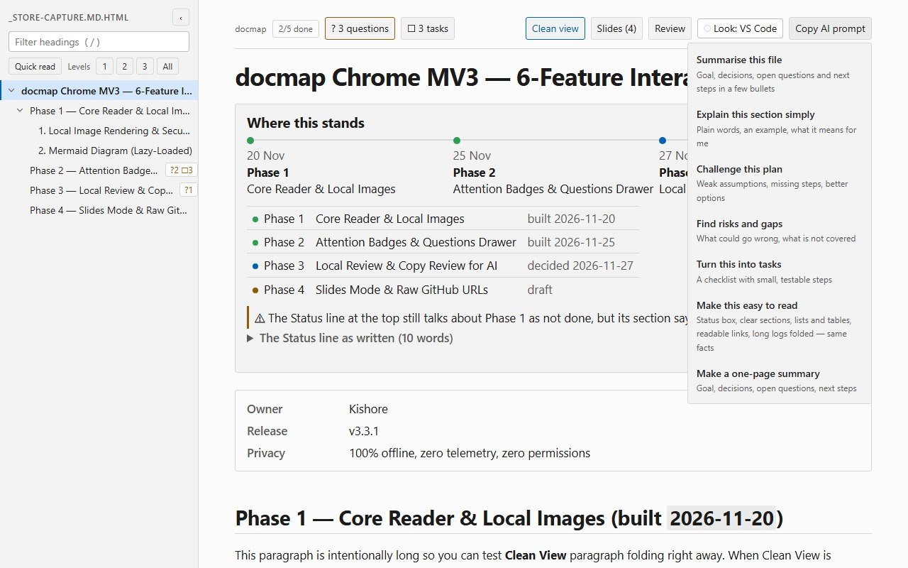
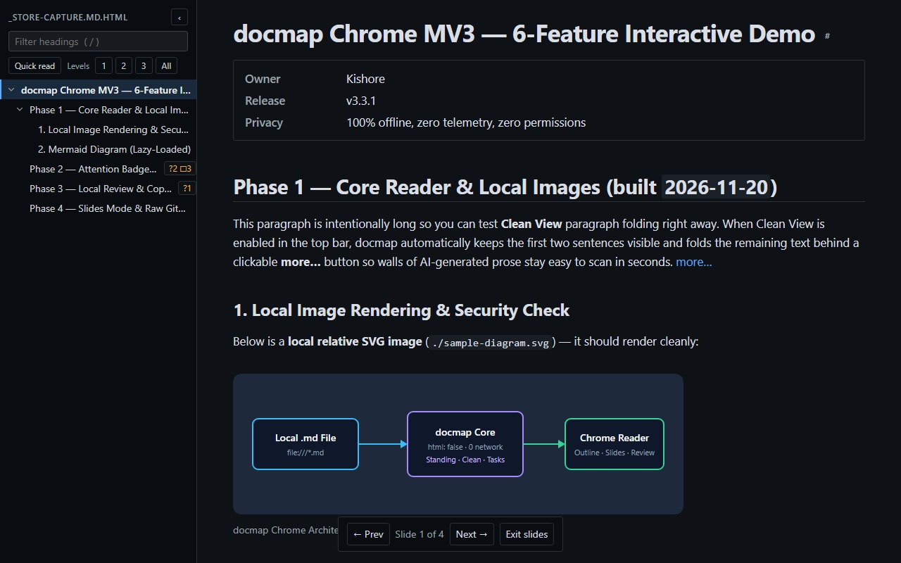

docmap for Chrome
Read local .md files, raw GitHub files and GitHub READMEs right in Chrome — no VS Code needed. Zero permissions, zero tracking, read-only.
- Local .md & Clean view
- 1-time local file toggle
- Plans, questions & 8 themes
- Review, highlights & Copy for AI
- 1-click Slides
- GitHub & raw files
- Zero permissions & privacy
-
Local .md files & Clean view
“I opened a
.mdfile in Chrome and got a wall of plain text.”docmap turns any local
.mdor.markdownfile into a clean page with a clickable outline, Where this stands summary, Quick read, fold/levels, safe relative images, and lazy-loaded Mermaid diagrams. Toggle Clean view off anytime to see it as written.Where: drag any
.mdfile into Chrome or open afile://link. Keys: Ctrl+B toggle outline, / filter headings, s quick read, j/k jump sections.
-
One-time setup for local files
“Why did my local
file://Markdown file still open as plain text?”Chrome keeps extensions off local files until you allow it once. Click the docmap toolbar icon for step-by-step instructions and a 1-click copy button for
chrome://extensions.How: open
chrome://extensions→ click Details on docmap → turn on Allow access to file URLs → reload the.mdtab. -
Plan progress, Questions & Tasks, and 8 themes
“Where are the open tasks and questions in this long doc — and can I read it in dark mode?”
The Questions & Tasks drawer lists every open checkbox and question with jump links and pill badges in the outline. Pick any of 8 reading themes (Paper, GitHub, GitHub Dark, Night, Warm Dark, Solarized Light, Focus, or System), plus text size and line width, from the Look button.
Where: click ? (Questions & Tasks) or Look in the top bar.

-
Local review, highlights & Copy for AI
“I want to mark up a plan in my browser and paste my feedback into Claude or ChatGPT.”
Highlight passages, leave section notes, or pick a ready prompt (summarise, challenge, find risks, turn into tasks). Click Copy Review for AI or Ask AI to copy a clean prompt to your clipboard — docmap never sends your text anywhere.
Where: select text on the page to highlight or comment, or click Ask AI in the top bar.

-
1-click Slides mode
“I want to present this Markdown doc on a call without making slides.”
Any doc separated by
---lines turns into full-screen slides in one click. Move with ← and →, press Esc to return to the page.Where: click Slides in the top bar.

-
GitHub READMEs & raw Markdown links
“Long READMEs on GitHub are hard to navigate, and raw GitHub links are plain text.”
On
github.com, docmap adds a collapsible outline sidebar beside any README or Markdown page (cleaning up automatically as you click around GitHub). Onraw.githubusercontent.comandgist.githubusercontent.com, raw.mdfiles open directly in the full docmap reader.Where: automatic on
github.com,raw.githubusercontent.comandgist.githubusercontent.com. -
Zero permissions, zero tracking
“What can this Chrome extension read or send?”
docmap requests zero Chrome API permissions, makes zero network calls, and collects zero telemetry. It renders Markdown with raw HTML disabled (
html: false) so untrusted.mdfiles cannot run scripts. Everything stays in your browser tab.
Want live code checks, Docs Inbox, Plans Dashboard and Doc Atlas too? Use docmap in VS Code.